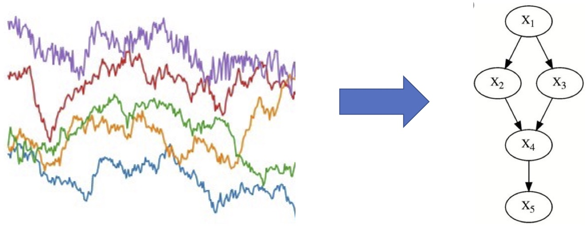
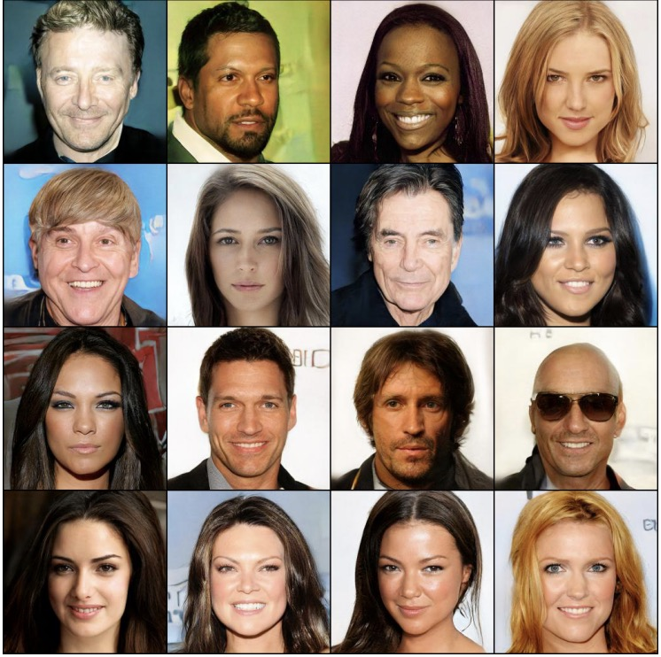
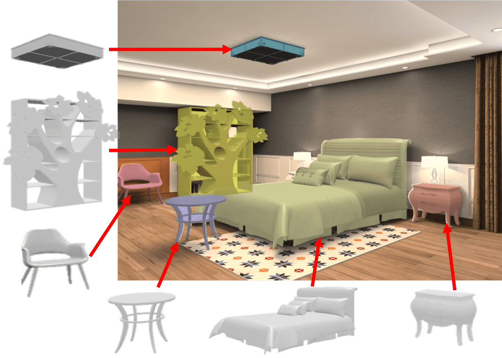

Research (Selected Topics)
Causal Discovery & Inference

Causal discovery and inference involve the challenge of learning causal structures from observational data and making inferences about causal effects based on these structures. This task is foundational across diverse scientific and engineering disciplines. Our current focus revolves around developing computational methods capable of uncovering causal relationships within intricate real-world datasets, all while ensuring theoretical robustness and reliability.
Causal Representation Learning
Powered by deep neural networks, representation learning extracts high-level representations from raw data and enables accurate predictions in many applications. However, existing representation learning techniques can not outperform humans in transferring/generalizing to new environments and tasks. In addition, the blackbox representations face challenges in the social aspects of AI, such as fairness, reliablity, and transparency. Our research goal is to learn causal representations, often via causal generative models, that enable efficient transfer learning, out-of-distribution generalization, and socially responsible learning.
Generative Models

Generative models, including GPT, GANs, and diffusion models, wield significant neural network capabilities to faithfully replicate intricate distributions found in real data. Our research emphasis lies in crafting generative models that are not only data-efficient but also computationally efficient. Moreover, delving into the realm of causal generative models, our core interest centers on developing models that mimic the data generation process while affording controllable and nuanced generations. Lastly, our curiosity extends to exploring generative models tailored for diverse data types, spanning images, text, 3D human motion, and beyond.
3D Vision

The realm of 3D vision is dedicated to modeling and comprehending the visual world, with a primary focus on deducing three-dimensional structures from two-dimensional images. Our research explores machine learning approaches for various facets of 3D vision, including depth estimation, novel view synthesis, feature matching, SLAM, and 3D model retrieval.
|